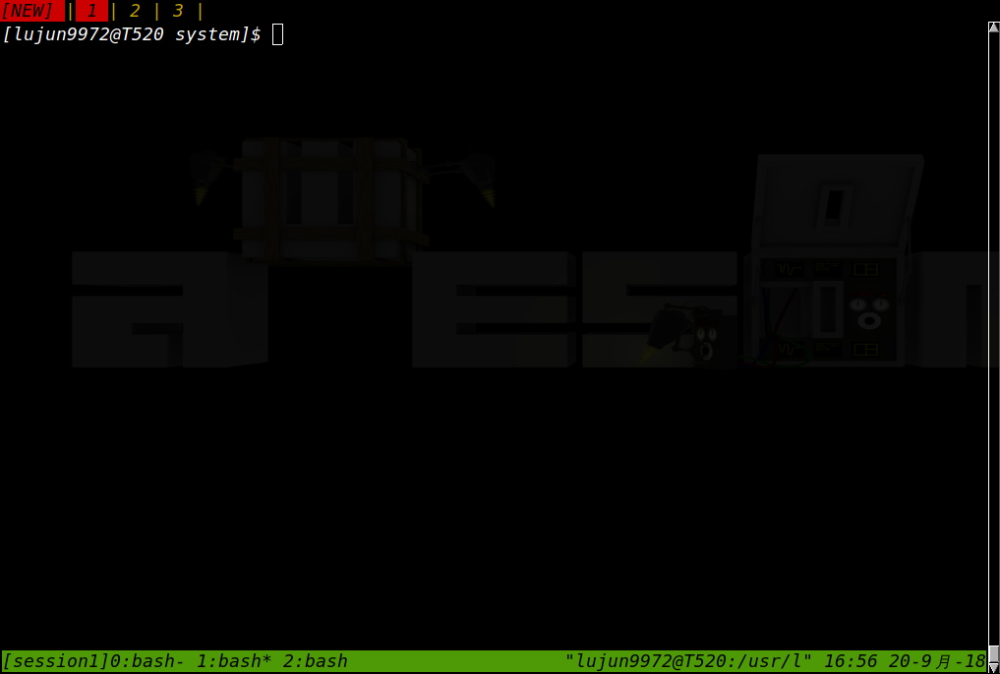
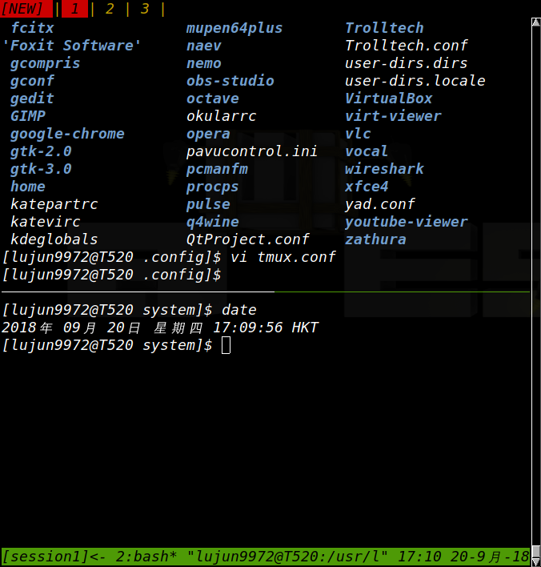

Tmux常用操作说明
目录
Session
未指定名称的Tmux session
直接运行 tmux 会产生一个Tmux Session
tmux
这种情况下 tmux 使用从0开始的数字作为Tmux Session的名称
创建指定名称的Tmux session
tmux new -s ${session_name}
从Tmux Session中分离
在Tmux Session中输入 Ctrl+b d 就能从Tmux Session中分离，并回到原shell。
但是这个Tmux Session本身并不会消亡，依然由Tmux Server在后台持有
查看现有哪些Tmux Session
要获取现在正在运行的session有哪些，可以运行下列命令:
tmux ls
0: 1 windows (created Thu Sep 20 16:40:14 2018) [122x13] session1: 1 windows (created Thu Sep 20 16:40:40 2018) [122x13]
重新接入Tmux Session
要重新接入指定名称的Tmux Session，可以运行:
tmux attach-session -t ${session_name}
Tmux Windows
一个Tmux Session中可以包括多个Windows，这些Windows的列表显示在屏幕底部的状态栏中 
每个Windows都有一个编号，这个编号的范围是0-9,比如上图中的这个Window就是编号为2
常用的Windows操作包括：
| 快捷键 | 功能 |
|---|---|
| Ctrl-b c | 创建一个新window |
| Ctrl-b w | 从列表中选择一个window,可以跨session选择 |
| Ctrl-b 数字 | 切换到指定编号的window |
| Ctrl-b , | 重命名当前Window |
Tmux Panes
类似的，一个Tmux Window可以包含多个Pane,一个Window刚创建时，只包含一个覆盖全Window的pane。 
常用的Panes操作包括:
| 快捷键 | 功能 |
|---|---|
| Ctrl-b % | 将当前pane横向分成左右两个pane |
| Ctrl-b " | 将当前pane纵向分成上下两个pane |
| Ctrl-b o | 跳转到下一个pane |
| Ctrl-b ; | 在当前pane和上一个pane之间切换 |
| Ctrl-b x | 关闭当前pane |
配置Tmux
Tmux的配置信息在 ~/.tmux.conf 中
该配置文件其实就是一系列的tmux命令，当tmux server启动时会加载这些命令。
你也可以通过 -f ${file} 来指定配置文件的路径
# 如果使用的是 256 色的终端，必须在 tmux 的配置文件 tmux.conf 中将终端设置为 tmux 或 tmux-256color set -g default-terminal "tmux-256color" # 设置最多回滚的行数 set -g history-limit 10000 # 启动non-login shell set -g default-command "${SHELL}" # 标题栏自动更改 set -g set-titles on set -g set-titles-string "#T"